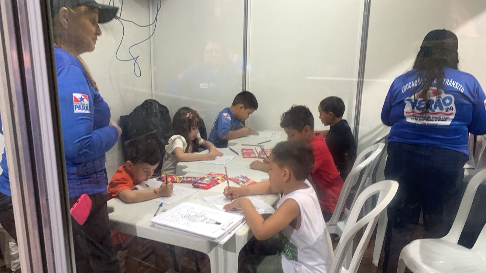

5 RESULTADOS
5.1 SEMANA I
5.1.1 Reuniões de Alinhamento
Iniciando a Operação Verão 2024 no dia 08 de julho de 2024, durante a primeira semana, foram realizados varias reuniões de alinhamento no município de Salinópolis. Teve início com apresentação da proposta de trabalho ao Gerente geral da Ciretran, Senhor Edicarlos Lima.
Posteriormente, foi reunido com a Secretaria Municipal de Meio Ambiente, Sra. Jessica Santos, para solicitar uma licença ambiental, delegando durante o mês de julho, o espaço para montagem da barraca e tenda da Educação de Trânsito, no calçadão da nova orla da cidade, situada na avenida beira mar.
Tabela 01: Dia 08/07/2024 (Segunda)
| DATA | LOCAL | ATIVIDADE | HORÁRIO |
|---|---|---|---|
| 08/07/24 (Seg) | Ciretran/Salinópolis | Apresentação | 08:00h |
| 08/07/24 (Seg) | Semma/Salinópolis | Solicitar Apoio/Passeio Ciclístico | 9:30h |
| 08/07/24 (Seg) | UNIASSELVI/Salinópolis | Solicitar Apoio/Passeio Ciclístico | 10:30h |
| 08/07/24 (Seg) | Rádio Litoral FM 93.1 | Apresentar OP. Verão 2024/Passeio Ciclístico | 15:30 |
No período da tarde, foi realizado a divulgação do Passeio Ciclístico, na Rádio Litoral Fm 93.1, com entrevista ao radialista Diego Reis.
5.1.2 Atividades I
5.1.2.1 Entrega de Kits
Na véspera do Passeio ciclístico, foi realizado a entrega dos kits, na barraca da educação situada na Avenida Beira Mar, Nova Orla do Município de Salinópolis.
Tabela 02: Dia 12/07/2024(Sexta)
| Métricas | Quantidade |
|---|---|
| Nº Inscrição Realizada | 846 |
| Nº de Kits Entregues | 750 |
| Nº de Equipe/CED/DTO | 12 |
| Nº de Computadores | 04 |
5.1.2.2 Kit Passeio
O kit do Passeio Ciclistico é composto por seguintes itens:
- Camisa Personalizada;
- Viseira;
- Squeeze;
- Toalinha de Rosto;
- Sacolinha;
- Medalha;
 |
Devido a grande repercussão do evento na cidade, foi aberto para realização de novas inscrições in locu. Perfazendo um total de 846 inscrições realizadas via sistema Sympla, e paralelo era feito a entrega dos kits para os que já haviam inscritos anteriormente no evento.
5.1.2.3 Passeio Ciclístico
Foi realizado um passeio ciclístico de 15 kilômetros no Município de Salinópolis. Evento este promovido pelo Governo do Estado por meio do Departamento de Trânsito do Estado do Pará(DETRAN-PA), e na Coordenação Operacional a Diretoria Técnica e Operacional(DTO).
Tabela 03: Dia 13/07/2024(Sábado/07:30)
| Métricas | Quantidade |
|---|---|
| Nº de Parceiros | 12 |
| Nº de Equipe: CED/DTO | 19 |
| Nº de Equipe: CFT/DTO | 5 |
| Nº de Equipe: UNIASSELVI | 6 |
| Nº de Equipe: SEMUTSAL | 5 |
| Nº Total da Equipes | 35 |
| Nº Total de Ciclistas | 356 |
Contou com a parceria de 12 entidades entre governo, universidade e Ongs. Durante o percursso participaram cerca de 356 ciclistas.
5.1.2.4 Kit Lanche
Ao Final do Percurso do Passeio Ciclístico foi entre um kit lanche composto por seguintes itens:
- 1 Barra de Cereal;
- 1 Banana;
- 1 Maça;
 |
5.1.2.5 Praia do Atalaia I
Durante o primeiro domingo de Operação Veráo 2024, foi realizado um das formas do Projeto Transitando na Praia. No qual a equipe de educação de trânsito, faz uma abordagem e orientação de cunho educativo aos turistas que se econtram nas diversas barracas e mesas da praia do atalaia.
Tabela 04: Dia 14/07/2024(Domingo/09:00)
| Métricas | Quantidade |
|---|---|
| Nº de Equipe: CED/DTO | 07 |
| Nº de Mesas Atendidas | 146 |
| Nº de Barracas Visitadas | 29 |
| Nº de kits (lixo car/Flanela) entregues | 720 |
| Nº de Homens Orientados | 226 |
| Nº de Mulheres Orientadas | 290 |
| Nº de Pessoas Atendidas | 516 |
No momento da abordagem, é trabalhado as noções basicas de direção defensiva, uso dos equipamentos de retenção obrigatórios e os principais fatores de risco, tais como: excesso de velocidade e associação bebida alcoólica e direção veicular. Muita das veze e sugerido escolher o motorista da rodada, para levar todos em segurança para casa.
5.1.2.6 Av Beira Mar I
5.1.2.6.1 Kit Educativo
No primeiro sábado a noite, foi realizado um Circuito Pedagógico de Trânsito, composto por uma estrutura de mini sala de aula, com ar refrigerado, 4 mesas 8 cadeiras, 2 Pedagogos e 5 técnicos nos carrinhos em miniatura elétricos.
Inicialmente, é feito o acolhimento das crianças, e apresentado o kit colorir, uma cartilha com desenhos 100% na temática educativa de trânsito, envolvendo o uso dos equipamento obrigatórios de segurança, faixa de travessia de pedestre, excesso de velocidade e uso do celular ao volante.
Também é realizado diversas orientações aos Pais presentes, tendo como foco a Temática de Educação de Trânsito.
Ao final é entregue o kit Educativo de Trânsito, composto por seguintes itens:
- 1 Jogo do Tabuleiro Aprendiz;
- 1 Talonário Mirim de Multa Pedagógica;
- 1 Apito Infantil;
- 1 Caneta;
5.1.2.6.2 Circuito Pedagógico I
Posteriormente, a criança é encaminhada ao Mini circuito controlado com carrinhos elétricos, sendo orientados pela equipe técnica.
|  |  |
Tabela 05: Dia 13/07/2024(Sábado/18:00)
| Métricas | Quantidade |
|---|---|
| Nº de Equipe: CED/DTO | 07 |
| Nº Mini Carros Usados | 06 |
| Nº de Crianças Atendidas | 180 |
| Nº de Mulheres Atendidas | 140 |
| Nº de Homens Atendidos | 80 |
| Nº de Kits entregues | 180 |
| Nº de Pessoas Atendidas | 400 |
No primeiro domingo a noite, foi realizado um circuito pedagógico de trânsito, composto por uma estrutura de mini sala de aula, com ar refrigerado, 4 mesas 8 cadeiras, 2 Pedagogos e 8 técnicos nos carrinhos em miniatura elétricos.
Tabela 06: Dia 14/07/2024(Domingo/18:00)
| Métricas | Quantidade |
|---|---|
| Nº de Equipe: CED/DTO | 10 |
| Nº Mini Carros Usados | 06 |
| Nº de Crianças Atendidas | 120 |
| Nº de Mulheres Atendidas | 100 |
| Nº de Homens Atendidos | 80 |
| Nº de Kits entregues | 95 |
| Nº de Pessoas Atendidas | 300 |
- A Primeira Etapa, É realizado uma sessão de pinturas com as temáticas sobre segurança viária;
- Posteriormente, é apresentado as crianças mini jogos de raciocínio lógico;
- A criança ganho um kit pedagógico que contém o jogo do aprendiz;
- A ultima etapa, a criança participa no circuito de minicarros elétricos.
5.1.2.7 PARCIAL SEMANA I
Tabela 07: Frequência Acumulada da SEMANA I
| Métricas | Quantidade |
|---|---|
| Nº de Pessoas em Trabalho | 35 |
| Nº de Mini-Carros (Circuito Pedagógico) | 06 |
| Nº de Vans Utilizadas | 02 |
| Nº de kits (Lixo Car/Flanela) Entregues | 720 |
| Nº de Kits (Jogo Aprendiz) Entregues | 340 |
| Nº de Kits (Passeio Ciclístico) Entregues | 750 |
| Nº Total de Crianças Atendidas | 365 |
| Nº Total de Pessoas Atendidas | 2.022 |
5.2 SEMANA II
5.2.1 Atividades II
5.2.1.1 PA-444(Decrescente)
Na Rodovia PA-444 Sentido Decrescente a Praia do Atalia (retorno a cidade), ocorreu a Blitz Educativa, com orientação aos condutores e passageiros a respeito dos principais fatores de risco para os diversos usuários da via. Na referida ação, foram distribuidos lixocars e flanela da Operação Verão 2024.
 |
|
Tabela 08: Dia 17/07/2024(Quarta/15:30)
| Métricas | Quantidade |
|---|---|
| Nº de Veículos | 158 |
| Nº de Automóveis | 149 |
| Nº de Motocicletas | 09 |
| Nº de Condutores Abordados | 114 |
| Nº de Condutoras Abordados | 44 |
| Nº de Passageiros | 292 |
| Nº de Homens | 95 |
| Nº de Mulheres | 127 |
| Nº de Crianças | 70 |
| Objeto Solto no Veículo | 24 |
| Não Uso do Cinto de Segurança | 13 |
| Nº Total de Pessoas Abordadas | 450 |
5.2.1.2 PA-444(Crescente)
Na Rodovia PA-444 sentido Crescente a Praia do Atalaia, ocorreu o Choque Educativo de Trânsito com orientação aos condutores e passageiros a respeito dos principais fatores de risco para os diversos usuários da via. Na referida ação, foram distribuidos lixocars e flanela da Operação Verão 2024.
Tabela 09: Dia 18/07/2024(Quinta/15:00)
| Métricas | Quantidade |
|---|---|
| Nº de Veículos | 195 |
| Nº de Automóveis | 194 |
| Nº de Motocicletas | 01 |
| Nº de Condutores Abordados | 164 |
| Nº de Condutoras Abordados | 30 |
| Nº de Passageiros | 408 |
| Nº de Homens | 120 |
| Nº de Mulheres | 176 |
| Nº de Crianças | 112 |
| Objeto Solto no Veículo | 23 |
| Não Uso do Cinto de Segurança | 27 |
| Não Uso da Cadeirinha | 14 |
| Nº Total de Pessoas Abordadas | 602 |
5.2.1.3 PA-124(Crescente)
Tabela 10: Dia 19/07/2024(Sexta/09:00)
| Métricas | Quantidade |
|---|---|
| Nº de Veículos | 227 |
| Nº de Automóveis | 223 |
| Nº de Motocicletas | 04 |
| Nº de Condutores Abordados | 189 |
| Nº de Condutoras Abordados | 38 |
| Nº de Passageiros | 498 |
| Nº de Homens | 159 |
| Nº de Mulheres | 232 |
| Nº de Crianças | 107 |
| Objeto Solto no Veículo | 36 |
| Não Uso do Cinto de Segurança | 15 |
| Animal Solto | 09 |
| Nº Total de Pessoas Abordadas | 725 |
Tabela 11: Dia 20/07/2024(Sábado/09:00)
| Métricas | Quantidade |
|---|---|
| Nº de Veículos | 181 |
| Nº de Automóveis | 170 |
| Nº de Motocicletas | 11 |
| Nº de Condutores Abordados | 157 |
| Nº de Condutoras Abordados | 24 |
| Nº de Passageiros | 369 |
| Nº de Homens | 79 |
| Nº de Mulheres | 204 |
| Nº de Crianças | 86 |
| Objeto Solto no Veículo | 22 |
| Não Uso do Cinto de Segurança | 11 |
| Animal Solto | 5 |
| Nº Total de Pessoas Abordadas | 550 |
5.2.1.4 Praia do Atalaia II
 |
|
 |
Tabela 12: Dia 21/07/2024(Domingo/09:00)
| Métricas | Quantidade |
|---|---|
| Nº de Equipe: CED/DTO | 06 |
| Nº de Mesas Atendidas | 50 |
| Nº de Barracas Visitadas | 10 |
| Nº de kits (lixo car/Flanela) entregues | 250 |
| Nº de Homens Orientados | 247 |
| Nº de Mulheres Orientadas | 219 |
| Nº de Crianças Orientadas | 69 |
| Nº de Pessoas Atendidas | 535 |
5.2.1.5 Av Beira Mar II
5.2.1.6 Circuito Pedagógico II
Tabela 13: Dia 17/07/2024(Quarta/18:00)
| Métricas | Quantidade |
|---|---|
| Nº de Equipe: CED/DTO | O7 |
| Nº Mini Carros Usados | 04 |
| Nº de Crianças Atendidas | 75 |
| Nº de Mulheres Atendidas | 55 |
| Nº de Homens Atendidos | 25 |
| Nº de Kits entregues | 95 |
| Nº de Pessoas Atendidas | 155 |
Tabela 14: Dia 18/07/2024(Quinta/18:00)
| Métricas | Quantidade |
|---|---|
| Nº de Equipe: CED/DTO | 07 |
| Nº Mini Carros Usados | 04 |
| Nº de Crianças Atendidas | 109 |
| Nº de Mulheres Atendidas | 75 |
| Nº de Homens Atendidos | 34 |
| Nº de Kits entregues | 120 |
| Nº de Pessoas Atendidas | 218 |
Tabela 15: Dia 19/07/2024(Sexta/18:00)
| Métricas | Quantidade |
|---|---|
| Nº de Equipe: CED/DTO | 09 |
| Nº Mini Carros Usados | 06 |
| Nº de Crianças Atendidas | 111 |
| Nº de Mulheres Atendidas | 73 |
| Nº de Homens Atendidos | 48 |
| Nº de Kits entregues | 150 |
| Nº de Pessoas Atendidas | 232 |
Tabela 16: Dia 20/07/2024(Sábado/18:00)
| Métricas | Quantidade |
|---|---|
| Nº de Equipe: CED/DTO | 09 |
| Nº Mini Carros Usados | 06 |
| Nº de Crianças Atendidas | 158 |
| Nº de Mulheres Atendidas | 86 |
| Nº de Homens Atendidos | 59 |
| Nº de Kits entregues | 200 |
| Nº de Pessoas Atendidas | 303 |
Tabela 17: Dia 21/07/2024(Domingo/18:00)
| Métricas | Quantidade |
|---|---|
| Nº de Equipe: CED/DTO | 09 |
| Nº Mini Carros Usados | 06 |
| Nº de Crianças Atendidas | 98 |
| Nº de Mulheres Atendidas | 41 |
| Nº de Homens Atendidos | 48 |
| Nº de Kits entregues | 90 |
| Nº de Pessoas Atendidas | 187 |
5.2.2 PARCIAL SEMANA II
Tabela 18: Frequência Acumulada da SEMANA II
| Métricas | Quantidade |
|---|---|
| Nº de Pessoas em Trabalho | 19 |
| Nº de Mini-Carros (Circuito Pedagógico) | 06 |
| Nº de Vans Utilizadas | 02 |
| Nº de Automóvel Utilizado | 01 |
| Nº de kits (Lixo Car/Flanela) Entregues | 2.450 |
| Nº de Kits (Jogo Aprendiz) Entregues | 625 |
| Nº de Veículos Abordados | 761 |
| Nº de Automóvel | 736 |
| Nº de Motocicleta | 25 |
| Nº de Condutores Orientados | 761 |
| Nº de Condutores (Homens) | 625 |
| Nº de Condutores (Mulheres) | 136 |
| Nº de Passageiros Orientados | 3.010 |
| Nº de Fatores de Risco Observados | 184 |
| Nº Total de Crianças Atendidas | 995 |
| Nº Total de Pessoas Atendidas | 3.771 |
5.3 SEMANA III
5.3.1 Atividades III
5.3.1.1 Praia do Farol (Binário)
Foi desenvolvido um trabalho de Organização do fluxo veicular no binário que leva o deslocamento dos veículos a rampa de entrada a Praia do Atalaia. A via é sinalizada com placas de Pare e Proibido Estacionar, porém, em dias de grande fluxo, a lei de trânsito não é respeitada. Com isso, existindo a necessidade de orientação, controle e ajuste do sistema viário no local.
Tabela 19: Dia 25/07/2024(Quinta/14:00)
| Métricas | Quantidade |
|---|---|
| Nº de Veículos | 208 |
| Nº de Automóveis | 198 |
| Nº de Motocicletas | 10 |
| Nº de Condutores Abordados | 149 |
| Nº de Condutoras Abordados | 59 |
| Nº de Passageiros | 490 |
| Nº de Homens | 196 |
| Nº de Mulheres | 208 |
| Nº de Crianças | 86 |
| Nº Total de Pessoas Abordadas | 698 |
Tabela 20: Dia 26/07/2024(Sexta/14:00)
| Métricas | Quantidade |
|---|---|
| Nº de Veículos | 154 |
| Nº de Automóveis | 134 |
| Nº de Motocicletas | 20 |
| Nº de Condutores Abordados | 107 |
| Nº de Condutoras Abordados | 47 |
| Nº de Passageiros | 266 |
| Nº de Homens | 101 |
| Nº de Mulheres | 123 |
| Nº de Crianças | 42 |
| Nº Total de Pessoas Abordadas | 420 |
Tabela 21: Dia 27/07/2024(Sábado/14:00)
| Métricas | Quantidade |
|---|---|
| Nº de Veículos | 204 |
| Nº de Automóveis | 187 |
| Nº de Motocicletas | 17 |
| Nº de Condutores Abordados | 147 |
| Nº de Condutoras Abordados | 57 |
| Nº de Passageiros | 334 |
| Nº de Homens | 126 |
| Nº de Mulheres | 161 |
| Nº de Crianças | 47 |
| Nº Total de Pessoas Abordadas | 538 |
Tabela 22: Dia 28/07/2024(Domingo/14:00)
| Métricas | Quantidade |
|---|---|
| Nº de Veículos | 128 |
| Nº de Automóveis | 114 |
| Nº de Motocicletas | 14 |
| Nº de Condutores Abordados | 87 |
| Nº de Condutoras Abordados | 41 |
| Nº de Passageiros | 187 |
| Nº de Homens | 73 |
| Nº de Mulheres | 92 |
| Nº de Crianças | 32 |
| Nº Total de Pessoas Abordadas | 347 |
5.3.1.2 Circuito Pedagógico III
Tabela 23: Dia 24/07/2024(Quarta/18:00)
| Métricas | Quantidade |
|---|---|
| Nº de Equipe: CED/DTO | O9 |
| Nº Mini Carros Usados | 06 |
| Nº de Crianças Atendidas | 65 |
| Nº de Mulheres Atendidas | 40 |
| Nº de Homens Atendidos | 14 |
| Nº de Kits entregues | 45 |
| Nº de Pessoas Atendidas | 119 |
Tabela 24: Dia 25/07/2024(Quinta/18:00)
| Métricas | Quantidade |
|---|---|
| Nº de Equipe: CED/DTO | O9 |
| Nº Mini Carros Usados | 06 |
| Nº de Crianças Atendidas | 90 |
| Nº de Mulheres Atendidas | 45 |
| Nº de Homens Atendidos | 39 |
| Nº de Kits entregues | 65 |
| Nº de Pessoas Atendidas | 165 |
Tabela 25: Dia 26/07/2024(Sexta/18:00)
| Métricas | Quantidade |
|---|---|
| Nº de Equipe: CED/DTO | O9 |
| Nº Mini Carros Usados | 06 |
| Nº de Crianças Atendidas | 85 |
| Nº de Mulheres Atendidas | 35 |
| Nº de Homens Atendidos | 25 |
| Nº de Kits entregues | 53 |
| Nº de Pessoas Atendidas | 145 |
Tabela 26: Dia 27/07/2024(Sábado/18:00)
| Métricas | Quantidade |
|---|---|
| Nº de Equipe: CED/DTO | O9 |
| Nº Mini Carros Usados | 06 |
| Nº de Crianças Atendidas | 71 |
| Nº de Mulheres Atendidas | 40 |
| Nº de Homens Atendidos | 22 |
| Nº de Kits entregues | 95 |
| Nº de Pessoas Atendidas | 133 |
Tabela 27: Dia 28/07/2024(Domingo/18:00)
| Métricas | Quantidade |
|---|---|
| Nº de Equipe: CED/DTO | 09 |
| Nº Mini Carros Usados | 06 |
| Nº de Crianças Atendidas | 86 |
| Nº de Mulheres Atendidas | 43 |
| Nº de Homens Atendidos | 24 |
| Nº de Kits entregues | 90 |
| Nº de Pessoas Atendidas | 153 |
5.3.2 PARCIAL SEMANA III
Tabela 28: Frequência Acumulada da SEMANA III
| Métricas | Quantidade |
|---|---|
| Nº de Pessoas em Trabalho | 16 |
| Nº de Mini-Carros (Circuito Pedagógico) | 06 |
| Nº de Vans Utilizadas | 02 |
| Nº de Automóvel Utilizado | 01 |
| Nº de kits (Lixo Car/Flanela) Entregues | 2.206 |
| Nº de Kits (Jogo Aprendiz) Entregues | 603 |
| Nº de Veículos Abordados | 694 |
| Nº de Automóvel | 633 |
| Nº de Motocicleta | 61 |
| Nº de Condutores Orientados | 694 |
| Nº de Condutores (Homens) | 490 |
| Nº de Condutores (Mulheres) | 204 |
| Nº de Passageiros Orientados | 2.011 |
| Nº de Fatores de Risco Observados | 203 |
| Nº Total de Crianças Atendidas | 604 |
| Nº Total de Pessoas Atendidas | 2.705 |
5.4 SEMANA IV
5.4.1 Atividades IV
5.4.1.1 Praia do Farol (Binário)
Tabela 29: Dia 01/08/2024(Quinta/14:00)
| Métricas | Quantidade |
|---|---|
| Nº de Veículos | 35 |
| Nº de Automóveis | 30 |
| Nº de Motocicletas | 05 |
| Nº de Condutores Abordados | 28 |
| Nº de Condutoras Abordados | 07 |
| Nº de Passageiros | 120 |
| Nº de Homens | 65 |
| Nº de Mulheres | 35 |
| Nº de Crianças | 20 |
| Nº Total de Pessoas Abordadas | 155 |
5.4.1.2 Feira do Porto Grande
Tabela 30: Dia 02/08/2024(Quinta/09:00)
| Métricas | Quantidade |
|---|---|
| Nº de Equipe: CED/DTO | 08 |
| Nº de Crianças Atendidas | 28 |
| Nº de Mulheres Atendidas | 118 |
| Nº de Homens Atendidos | 232 |
| Nº de Kits entregues | 274 |
| Nº de Pessoas Atendidas | 378 |
5.4.1.3 Circuito Pedagógico III
Tabela 31: Dia 02/08/2024(Quinta/18:00)
| Métricas | Quantidade |
|---|---|
| Nº de Equipe: CED/DTO | |
| Nº Mini Carros Usados | |
| Nº de Crianças Atendidas | |
| Nº de Mulheres Atendidas | |
| Nº de Homens Atendidos | |
| Nº de Kits entregues | |
| Nº de Pessoas Atendidas |
5.5 TOTAL GERAL
Tabela 32: Frequência Acumulada Total Geral
| Métricas | Quantidade |
|---|---|
| Nº de Pessoas em Trabalho | |
| Nº de Mini-Carros (Circuito Pedagógico) | |
| Nº de Vans Utilizadas | |
| Nº de Automóvel Utilizado | |
| Nº de kits (Lixo Car/Flanela) Entregues | |
| Nº de Kits (Jogo Aprendiz) Entregues | |
| Nº de Veículos Abordados | |
| Nº de Automóvel | |
| Nº de Motocicleta | |
| Nº de Condutores Orientados | |
| Nº de Condutores (Homens) | |
| Nº de Condutores (Mulheres) | |
| Nº de Passageiros Orientados | |
| Nº de Fatores de Risco Observados | |
| Nº Total de Crianças Atendidas | |
| Nº Total de Pessoas Atendidas |